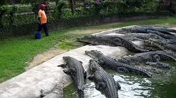
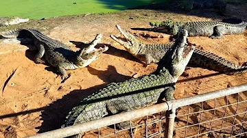
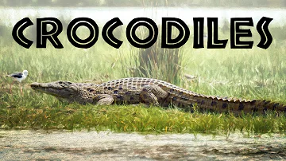
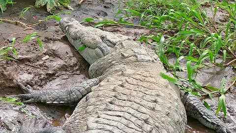

Shenshuping Panda Center
506 watching now
You can donate to this animals for a wonderful lunch.
Pandas will receive a mixture of bamboo shoots, carrots and apples. Animals will receive your gift in about 5-15 minutes
Other cams
- 
112 viewers
- 
112 viewers
- 
112 viewers
- 
112 viewers
Interesting facts
The yards at the Shenshuping Panda Center in China's Wolong Valley are filled with bamboo, making them very happy. Watch live and learn more about pandas.
A total of 60 giant panda cubs were born in 2019, bringing the total population of these animals in captivity around the world to 600. And in the wild there are less than 2,000 giant pandas left. They mainly live in Sichuan and Shaanxi provinces. This animal is not only a symbol of the Celestial Empire, but is also under the protection of the Chinese authorities. Harming a panda is punished very severely.
Pay & feed
Pay with VISA card
On the payment page, you need to enter the details of your "Visa" card and make a transfer. The operation will not take more than ~2 minutes.
Payment goes to the zoo
Payment goes to the account of the zoo and volunteers with employees receive a notification about the donation.
The selected animal receives a treat
The staff takes the food you need for your chosen animal and delivers it to the animal. With your help, the animal is happy!